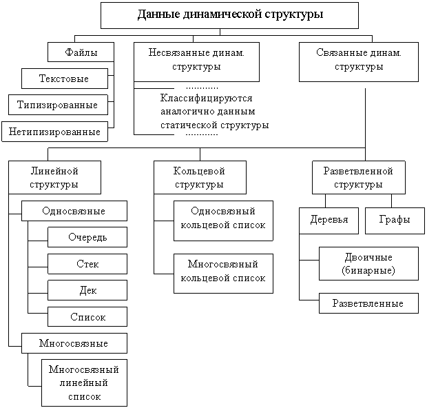
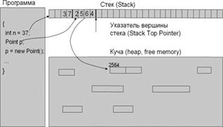
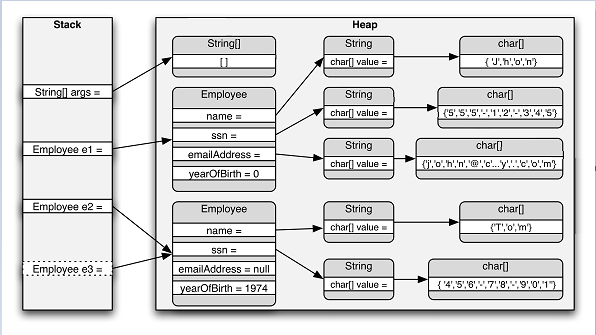

Динамические структуры данных
Объект данных обладает динамической структурой, если его размер изменяется в процессе выполнения программы или он потенциально бесконечен.
Классификация структур данных
Используемые в программировании данные можно разделить на две большие группы:

Данные статической структуры – это данные, взаиморасположение и взаимосвязи элементов которых всегда остаются постоянными.
Данные динамической структуры – это данные, внутреннее строение которых формируется по какому-либо закону, но количество элементов, их взаиморасположение и взаимосвязи могут динамически изменяться во время выполнения программы, согласно закону формирования.

Динамическое распределение памяти
Память, которую использует программа делится на три вида:- Статическая память (static memory)
- хранит глобальные переменные и константы;
- размер определяется при компиляции.
- Стек (stack)
- хранит локальные переменные, аргументы функций и промежуточные значения вычислений;
- размер определяется при запуске программы (обычно выделяется 4 Мб).
- Куча (heap)
- динамически распределяемая память;
- ОС выделяет память по частям (по мере необходимости).

Стек (stack) – это линейный участок памяти (массив), который действует как структура данных типа "Последним пришел – первым ушел" (last-in, first-out – LIFO). Основной особенностью стека является то, что данные могут добавляться только в вершину стека и удаляться из нее. Добавление и удаление данных из произвольного места стека невозможно. Операции по добавлению и удалению элементов из стека выполняются очень быстро. Однако размер стека, как правило, ограничен, и время хранения данных зависит от времени жизни переменной. Для всех локальных переменных методов и передаваемых методам параметров память выделяется в вершине стека. После того, как методы заканчивают работу, вся выделенная память в стеке для их переменных автоматически освобождается.
Куча (heap) – это область оперативной памяти, в разных частях которой могут выделяться участки для хранения объектов классов. В отличие от стека, такие участки памяти в куче могут выделяться и освобождаться в любом порядке. Хотя программа может хранить элементы данных в куче, она не может явно удалять их из нее. Вместо этого компонент среды CLR, называемый "Сборщиком мусора" (Garbage Collector, GC), автоматически удаляет неиспользуемые участки кучи, когда он определит, что код программы уже не имеет доступа к ним (не хранит их адреса).
Локальные переменные методов хранятся следующим образом:
- • Значащие типы хранятся только в одном участке памяти, который хранит реальные данные и размещается в стеке.
- • Ссылочные типы требуют два участка памяти: первый – содержит реальные данные (сами объекты) и всегда размещается в куче; второй – размещается в стеке и содержит ссылку (адрес), которая указывает на размещения объекта в куче.
